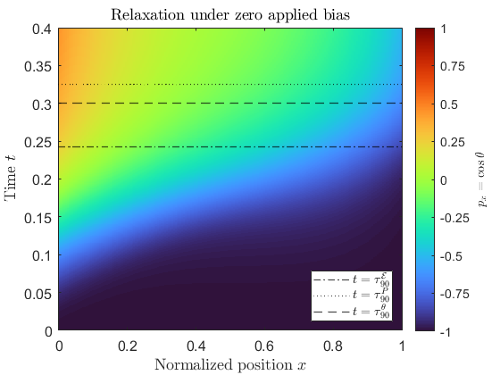
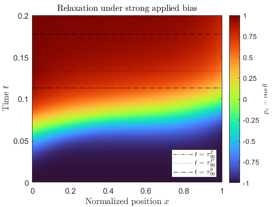

I study how mathematical and computational modeling can be used to understand
the behavior of complex materials. My research combines tools from
ordinary/partial differential equations, the calculus of variations,
mathematical analysis, and numerical simulation to connect physics-based models
with predictions about how materials respond to external forces and their
surroundings.
My doctoral research primarily focuses on continuum models of
bent-core smectic-A ferroelectric (SmAPF) liquid crystals.
Ferroelectric liquid crystals
Liquid crystals are an unusual (and cool) state of matter: they can
flow like liquids, while their molecules retain some of the
orientational order found in solids. In smectic liquid
crystals, the molecules additionally organize into layers.
In ferroelectric liquid crystals, the molecules also exhibit
a spontaneous electrical polarization, which introduces an additional
interaction between molecular orientation and applied electric fields.
In bent-core liquid crystals, individual molecules are bent
(like a banana or chevron) which also contributes to this polarization
through the underlying geometry of how electrons are placed.
This creates a competition between several different physical mechanisms:
elasticity may prefer the molecules to be oriented one way, electric
forcing may prefer another orientation, and interactions between the
molecules and the boundaries of the surfaces containing them may prefer yet another.
Examples of several smectic liquid-crystal phases. SmAPF
phase is shown lower left. Note the bent-core structure. Image source:
Gill et. al. (2025), Materials Horizons,
[link].
Why liquid crystals?
From a mathematical perspective: liquid crystals lead to a surprisingly rich
collection of analytical problems. Pierre-Gilles de Gennes won the 1991
Nobel Prize in physics for his part in extending classical phase transitions theory
to liquid crystals and other complex polymers
[link].
In the real world: liquid crystals are useful in engineering applications because their
molecular orientation can be controlled by external forces, in particular
an applied electric field. This makes it possible to translate a change in
electrical input into a change in the material's optical properties.
Every time you use an LCD (liquid-crystal display) screen -- whether on a laptop monitor,
television, calculator, or other display -- a voltage is applied across
a thin cell of liquid crystal molecules. The resulting electric field changes the orientation
of the molecules, which changes how light passes through the display.
By controlling this response pixel by pixel, the LCD produces the images you
see on your screen.
Diagram of an LCD screen. The liquid crystal layer is located fourth from front,
and a polarizing layer surrounds the LC cell on both sides separated by a filtering layer.
Image source: PTCLED (2024),
[link].
What I Study
How do competing effects from material properties, externally applied electric
fields, and interactions with the boundaries of a device influence the structure and
evolution of SmAPF liquid crystals?
I use mathematical and numerical models to determine which configurations are
possible, when they are unique, how they change as physical parameters vary,
and how the material approaches equilibrium over time.
Equilibrium Structure
The first part of my doctoral research asks what equilibrium configurations
of a thin SmAPF liquid crystal cell are possible under an applied
electric field, and how those configurations depend on the competing
physical effects within the material.
We describe the molecular orientation using an angle \(\theta(x)\), where
\(x\) denotes position across the cell. Starting from a free energy model,
we account for elastic deformation of the director, interactions with the
cell surfaces, and ferroelectric coupling to an externally applied
electric field. Equilibrium configurations correspond to stationary
points of this energy and satisfy a nonlinear boundary value problem.
Here, \(x \in [0,1]\) denotes normalized position across the cell,
\(\vec{p}(x)= (\cos\theta(x),\sin\theta(x),0)\) is the polar director, \(\kappa\) measures elastic
anisotropy, \(L/\xi\) is the ratio of the cell thickness to the
elastic-electrostatic intrinsic length scale,
\(\widetilde{E}_B\) is the dimensionless applied electric
bias, and \(\widetilde{W}_S\) measures surface anchoring strength.
This formulation allows us to ask how competition between bulk forcing
from the electric field and anchoring at the cell surfaces determines the
equilibrium director profile. Of particular interest is when the electric
field becomes strong enough to overcome the surface effects and align the
material with the applied field.
Analytically, I establish results on existence and uniqueness, monotonicity
and symmetry of solutions, and the admissible molecular configurations
associated with different parameter regimes. Numerically, I use
second-order finite differences together with gradient-flow and Newton
methods to compute equilibrium solutions and explore their dependence on
the physical parameters.
The figures below illustrate this competition through the polar director
component \(p_x = \cos\theta\). Increasing the applied electric bias favors
alignment in the \(+x\) direction throughout the cell, while increasing
the surface anchoring strength more strongly enforces the preferred
orientations at the two cell boundaries.
Electric bias.
An applied electric field in the \(+x\) direction favors alignment
of the liquid crystal director with the field. Fixed parameters:
\(\tilde{W}_S=0.5, \kappa = 0.2, L/\xi = 4\)
Surface anchoring.
Increasing the surface anchoring strength enforces the preferred
boundary orientations more strongly, driving the director toward
\(p_x = 1\) at \(x=0\) and \(p_x=-1\) at \(x=1\). Fixed parameters:
\(\tilde{E}_B=0, \kappa = 0.2, L/\xi = 4\)
Dynamics and Relaxation
The equilibrium model describes the configurations that minimize the free
energy, but it does not tell us how the liquid crystal approaches those
states. My current work extends this model to study the time-dependent
relaxation of the director.
We use a Landau–Khalatnikov evolution in which the same free energy
that determines the equilibrium structure also drives the dynamics.
The resulting nonlinear partial differential equation describes how the
molecular orientation evolves while the system dissipates energy and
relaxes toward equilibrium.
Mathematically, I study existence and uniqueness of solutions, preservation
of physically admissible director orientations, and the long-time behavior
of the evolution. I also use numerical simulations to investigate how
physical parameters such as the applied electric bias affect both the
transient dynamics and the rate of relaxation.
The heatmaps below show the director component
\(p_x = \cos\theta\) as a function of normalized position \(x\) and time
\(t\). Color indicates the local molecular orientation, while the horizontal
lines mark characteristic times at which the solution has completed 90%
of its relaxation according to several measures.

Relaxation under zero applied bias.
With \(\widetilde{E}_B=0\), the evolution is governed primarily by
elastic and surface effects. The director gradually relaxes toward
an equilibrium profile that is symmetric across the cell.
Fixed parameters:
\(\widetilde{W}_S=0.5,\ \kappa=0.2,\ L/\xi=4\).

Relaxation under strong applied bias.
With \(\widetilde{E}_B=2\), the electric field strongly favors
alignment in the \(+x\) direction. The director therefore evolves
toward a more uniformly positive \(p_x\) state and reaches its
equilibrium configuration more rapidly.
Fixed parameters:
\(\widetilde{W}_S=0.5,\ \kappa=0.2,\ L/\xi=4\).
My Approach
Across these problems, I combine physics-based modeling, mathematical analysis,
and numerical computation. I start from a physics-based energy principle, derive
the governing differential equations, analyze the resulting differential equations mathematically,
develop numerical methods to compute their solutions, and use those
solutions to understand how physical parameters influence the behavior of complex
materials (in my doctoral research setting, SmAPF liquid crystals).
A. D. Wendland and X. Yan, Polar director structure of SmAPF phase of bent-core
liquid crystals in thin planar cells with bias electric field,
arXiv:2606.22668 [math.AP], June 2026. Submitted to Journal of
Mathematical Analysis and Applications.
In Preparation
A.D. Wendland and X. Yan, Well-posedness and long-time behavior of a one-dimensional Landau-Khalatnikov
model for SmAPF bent-core liquid crystals , manuscript in preparation.
Other Papers
T. E. St. George and A. D. Wendland, Orthonormalization of a subset of Bernstein
polynomial basis functions, The PUMP Journal of Undergraduate Research
7 (2024), 258-273,
DOI https://doi.org/10.46787/pump.v7i0.3765.
Upcoming Talks
May 2027, SIAM Materials Science, Bellevue, Washington. Invited talk.
Selected Talks
May 2026, Graduate Research Forum, The University of Connecticut.
May 2026, SIGMA Seminar, The University of Connecticut.
April 2026, FADE Conference, Fairfield University.
March 2026, Workshop in PDE and Applied Math in the Northeast Region, The University of Connecticut.
March 2024, Mathematics continued conference, The University of Connecticut.
October 2023, Geometric Analysis Student Seminar, The University of Connecticut.
March 2023, Geometric Analysis Student Seminar, The University of Connecticut.